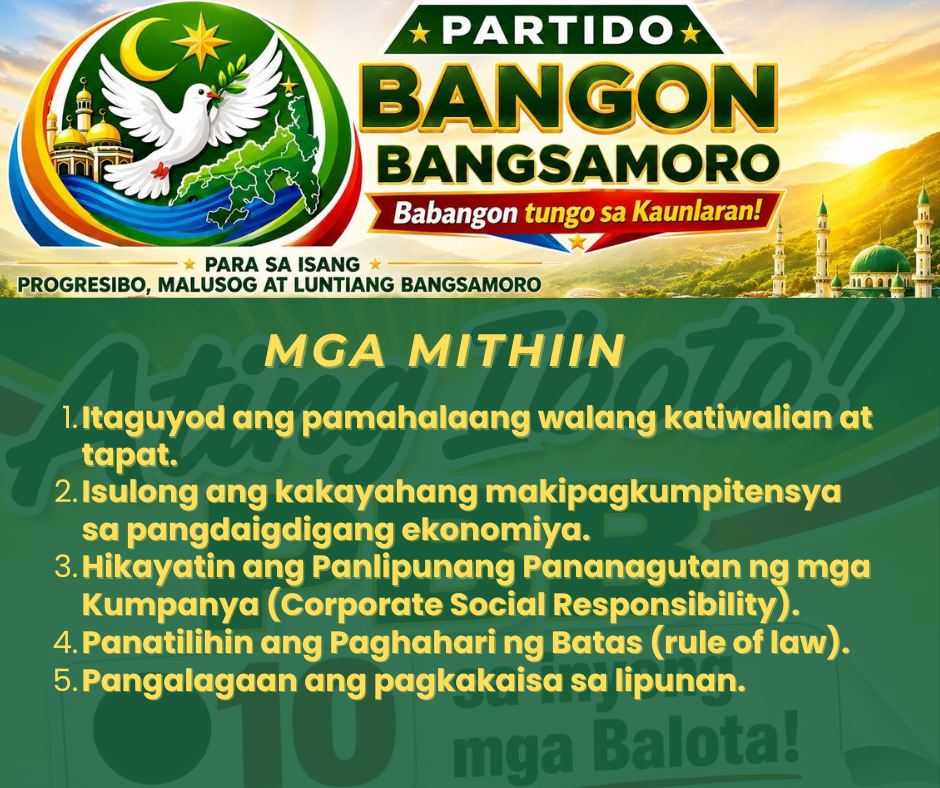

Sumali sa PBB
Tatlong paraan para makasama ka sa amin. Magkakaiba sila — at puwede mong gawin ang lahat. Piliin kung saan ka magsisimula, o gawin ang tatlo.

Maging miyembro
Para sa gustong maging ganap ng mmyemmbro at opisyal na kasapi. Sagutan ang form at makakakuha ka ng PBB Membership ID na may litrato at lagda mo — puwedeng i-print, i-verify, at gamitin sa mga gawain ng partido.
Mga 3 minuto · Libre · Kailangan: numero at litrato
Pumunta sa membership form →Mag-volunteer
Para sa gustong tumulong — kahit hindi ka miyembro. Ground work, precinct work, poll watching, digital campaign, o sectoral organizing. Malaya kang pumili ng paraan ng pagtulong.
Mga 1 minuto · Walang quota · Ikaw ang magpapasya ng oras
Pumunta sa volunteer form →Makipag-partner
Para sa mga organisasyong gustong makipagtulungan. Mosque committee, youth group, farmers' cooperative, mothers' association, NGO, o propesyonal na asosasyon. May e-signature sa ilalim ng RA 8792.
Walang bayad · Walang obligasyon sa pag-endorso
Pumunta sa partnership agreement →Ano ang pagkakaiba ng miyembro at volunteer?
Ang miyembro ay opisyal na kasapi ng partido — may Membership ID, at kabilang sa 71,000+ na kasapi sa buong BARMM. Ang volunteer ay tumutulong sa kampanya, miyembro man o hindi. Hindi mo kailangang maging miyembro para tumulong. At hindi ka pipilitin na tumulong kahit miyembro ka na. Malaya ka — dahil sa PBB, ang pakikilahok ay base sa merito at kusang-loob, hindi sa obligasyon. Marami ang gumagawa ng pareho.
Walang internet? Kahit walang internet, puwede ka pa ring sumali.
Hotline: 0966 301 8777 — may taong sasagot, hindi robot. I-text ang SUMALI sa parehong numero at kami na ang bahala. O pumunta sa chapter ng PBB sa probinsya o barangay mo — may tao diyan na tutulong sa iyo, walang iwanan.